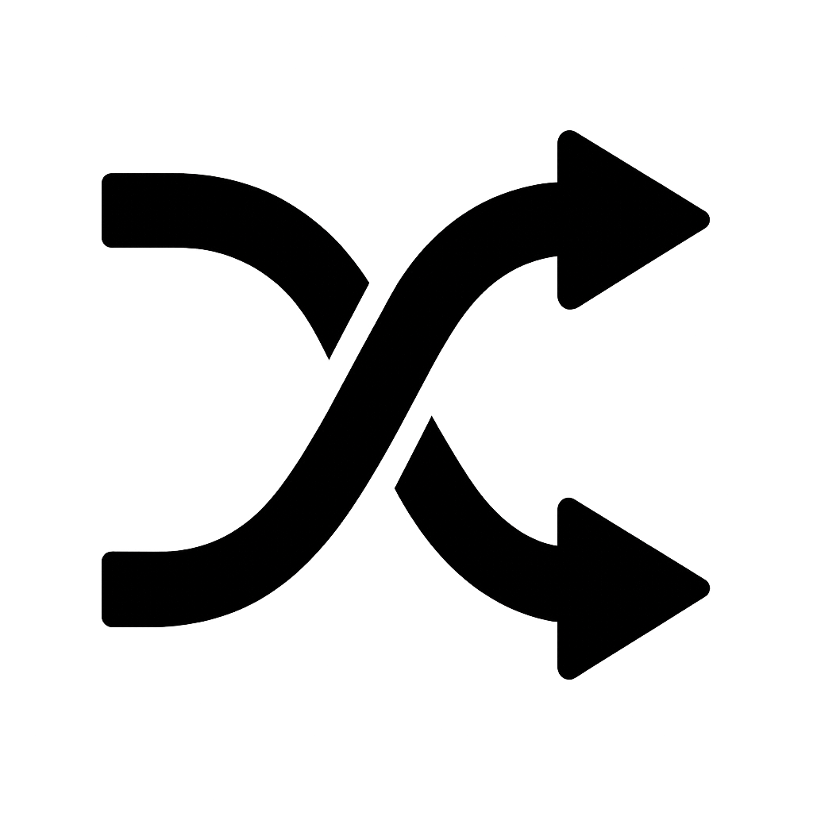

Converter octal para decimal 
Explicação
Para transformar um numero octal em decimal, os passos são os seguintes:
1- Analisa quantas casas tem.
2- Os octais tem base 8 e o expoente aumenta de 0 até a ultima casa da direita pra esquerda.
3- O resultado das potencias você multiplica pelo numero da casa.
4- Após fazer o apsso 3 com todos os numeros do octal você soma tudo e em fim, octal para decimal.